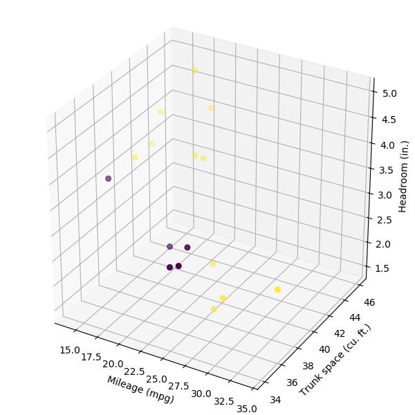

In Stata 16, you can embed and execute Python code from within Stata. Stata’s new python command provides a suite of subcommands allowing you to easily call Python from Stata and output Python results within Stata.
We will build a classifier using the Support Vector Machine (SVM) classifier within the scikit-learn Python package to detect if a car in Stata’s auto dataset is foreign or domestic built.
Note that you need to install the Matplotlib, sklearn, and NumPy packages in your current Python installation to run the following example.
. set seed `seed'
. sysuse auto, clear
(1978 Automobile Data)
. gen train = 0
. replace train = 1 if runiform() < `percent'/100
(18 real changes made)
. frame put if train==0, into(predict)
. keep if train==1
(56 observations deleted)
We produce a 3d scatter plot of the trainning data. The points are color coded for different type (foreign or domestic).
python:
import numpy as np
from sfi import Platform
import matplotlib
if Platform.isWindows():
matplotlib.use('TkAgg')
import matplotlib.pyplot as plt
from sfi import Data
import imageio as io
import os
from mpl_toolkits.mplot3d import Axes3D
X = np.array(Data.get("foreign mpg turn headroom"))
fig = plt.figure(1, figsize=(6, 6))
ax = Axes3D(fig)
ax.scatter(X[:, 1], X[:, 2], X[:, 3], c=X[:, 0]<0.1, s=30)
ax.set_xlabel("Mileage (mpg)")
ax.set_ylabel("Trunk space (cu. ft.)")
ax.set_zlabel("Headroom (in.)")
plt.savefig("train_for.png")
plt.close()
end

Now We produce the same 3d scatter plot for the prediction data.
Now we train the SVM classifier using the trainning data, then predict the type using the prediction data.
. frame change default
. pysvm2 foreign mpg turn headroom
note: training finished successfully
. frame change predict
. pysvm2predict foreign_pred
. label values foreign_pred origin
. tabulate foreign foreign_pred, nokey
| foreign_pred
Car type | Domestic Foreign | Total
-----------+----------------------+----------
Domestic | 38 2 | 40
Foreign | 12 4 | 16
-----------+----------------------+----------
Total | 50 6 | 56